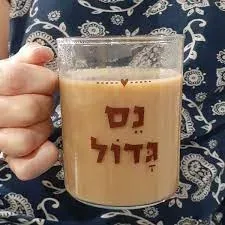
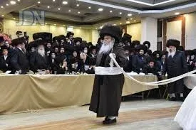
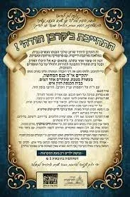

מהי תעלומת הקול החמישי בשבע הברכות? או מדוע גנבו את קול תודה מהחתונה?מה מתרץ המהרש''א בקיצור?
הוכח מתירוץ המהרש''א שהקול החמישי אינו קול בפני עצמו, אלא מבאר את הקולות הקודמים!
מה יהיה באור המילים "נערים ממשתה נגינתם" לבאור המהרש''א?
מדוע לדעתך בקהל ישראל שרו עד היום (בשיר עוד ישמע...) רק ארבע קולות?
גם אם קול מצהלות חתנים משמעותו כמו קול אומרים הודו. למה שינה בברכה מלשון הפסוק?
הקול החמישי אומר: קוֹל אֹמְרִים הוֹדוּ אֶת יְיָ צְבָאוֹת כִּי טוֹב יְיָ כִּי לְעוֹלָם חַסְדּוֹ מְבִאִים תּוֹדָה בֵּית יְיָ כִּי אָשִׁיב אֶת שְׁבוּת הָאָרֶץ כְּבָרִאשֹׁנָה אָמַר יְיָ. הבא שתי אפשרויות על מה מודים ומביאים קרבן תודה?
כיצד יפרש כל אחד מהפירושים בשאלה הקודמת את ה"כי" כִּי אָשִׁיב אֶת שְׁבוּת הָאָרֶץ כְּבָרִאשֹׁנָה?
כיצד דורשת הגמ' בברכות את המילים כי אשיב את שבות הארץ?
איזה נפ''מ הלכתית בהלכות קרבן תודה אפשר לתלות במחלוקת הנ''ל?
האם ניתן להוכיח כמו איזה דעה סבר מחבר ברכות השבע ברכות?
כיצד לפי זה ניתן לישב באופן נוסף את שאלה מדוע שינה התנא מלשון הפסוק?
תירוץ נוסף ניתן לומר לשאלה הנ''ל, על דרך מצווה ותוצאה.
מדוע חתן חייב בקרבן תודה הרי הוא לא מכלל 'ארבעה שחיבים להודות'? הבא ג' תירוצים!
הבא כמה ראיות לשיטת רבינו בחיי בקרבן תודה?
אם חתן חייב בקרבן תודה, מדוע הלכה זו לא מופיעה ברמב''ם?
לפי התירוץ בשאלה הקודמת, הסבר מדוע בחנוכה לא קבעו חובה לעשות סעודה?
כיצד ניתן להסביר לפי זה: מדוע סעודת שבע ברכות היא רשות?
קול מצהלות חתנים בחופתם – וכי ראינו מעולם חתן שר בקול (צוהל) בחופה?
מדוע אמרו מחופתם, ולא קול מצהלות חתנים בחופתם?
מדוע דווקא הנערים מנגנים במשתה?
הבא ראיה שדרך נער לשיר שירים?

אדם שקרה לו נס או חסד ה' , באלו שני דברים הוא חייב? ומנין?
היכן שני חלקים אלו נמצאים בקרבן תודה?
היכן שני חלקים אלו נמצאים בקול החמישי?
היכן בברכה יש שני חלקים אלו?
מדוע אמרו חז''ל: "המשמח חתן וכלה - כאילו הקריב קרבן תודה"?
מאיזה פרשה בתורה אנו יכולים ללמוד כיצד צריך להראות חתונה?
היכן מוצאים אנו בפרשה הנ''ל את שני החיובים הנ''ל?
על איזה נקודה בפרשת אליעזר אמרו חז''ל "יפה שיחתן של עבדי אבות יותר מתורתן של בנים"?
הסבר לפי זה מדוע מצוות נר חנוכה היא חביבה עד למאוד?
נפסק בשו''ע אין מברכים ברכת חתנים (שבע ברכות) אלא בעשרה. מדוע צריך עשרה? במה זה שונה מכל ברכות השבח שלא צריך עשרה? (הבא כמה ביאורים)
מה נפ''מ בין הבאורים?
איזה דין נוסף יש בשביל לומר שבע ברכות?
הסבר מה טעם דינים אלו לפני שני חלקי ההודיה?
כיצד לפי זה מובן מדוע שבת נחשבת גם פנים חדשות?
נסה לתאר מה יהיה כאשר הקול החמישי יתקיים במלואו?

בשבע הברכות שמברכים את החתן והכלה, ישנה תעלומה גדולה. הברכה האחרונה, "אשר ברא", נתקנה על לשון הפסוק בירמיה (לג,יא – מובא בהערה). הנה בברכה יש ארבעה קולות [ששון, שמחה, חתן, כלה], ואילו הקול החמישי המובא בירמיה - קול ההודיה לה' - לא מופיע בברכה.
כתבו קול מצהלות חתנים תחת קול אומרים הודו את ה' צבאות, היינו שהחתנים מברכים ומודים בקולם לה'. פירוש המילים "קול מצהלות חתנים מחופתם" הוא, שמחת החתן הצוהל בהודיה לה'.
ממה שפירש המהרש''א שקול אומרים הודו זה קול מצהלות חתנים, רואים שקול ההודיה אינו עוד קול, אלא חוזר על החתן והששון והשמחה שלהם – לומר שההודיה לה' יתברך! היא הציר שמסביבה הכול מסתובב! ההודיה היא המזרימה ששון ושמחה, היא הגורמת לשמחה המרוממת של החתן והכלה ושל כל המשתתפים בשמחתם.
"ונערים ממשתה נגינתם", הכוונה לסעודות חתן וכלה (סעודה בלשון חז''ל נקראת משתה), שמטרתן האמיתית היא להיות סעודות הודיה על הטוב המרהיב של השי"ת המתגלה מהמציאות הנפלאה של חתן וכלה, ובהן ראוי שכל המשתתפים יפרצו בשירי שבח והודיה לבורא העולם.
יתכן לומר: המהר''ל אומר: "חמשה הוא מספר מתיחס לגאולה". לכן רק לפני הגאולה שרים עם חמשה קולות, להביא את הגאולה בב''א.
מבארים המפרשים: יש דין 'סמוך לחתימה מעין החתימה', בברכה ארוכה צריך לסיים במעין הרעיון שעליו מברכים (לדוגמא: ונאמן אתה להחיות מתים, ברוך...מחיה המתים). היות ולשון הברכה הוא "משמח חתן עם הכלה" לכן סיים במילים קול מצהלות חתנים שמשמעותם כמו קול התודה.
דעת רבינו בחיי (פרשת צו): התודה וקרבן תודה מתייחסים לתחילת הפסוק - החתן והכלה הם מודים ומביאים קרבן תודה. לכן פסק שחתן חייב בקרבן תודה.
לעומת זאת דעת האברבנאל, כי התודה וקרבן התודה מתייחסים לסוף הפסוק - המצב הנפלא בו ה' מביא את הגאולה, ומחמת הגאולה באה ההודיה.לדעת רבינו בחיי: הכי הוא נתינת זמן, מתי יהיה זה כאשר אשיב את הארץ כבראשונה. לדעת האברבנאל הכי הוא נתינת טעם, מדוע מביאים תודה וקרבן תודה.
הגמ' בברכות דורשת כי אשיב - על ידי זה אשיב, על ידי שמחת חתן וכלה שיש בהם קול הודיה אשיב את שבות הארץ. יתכן והיה קשה לגמ' שמילים אלו מיותרות, ברור שמתי יהיה קול שמחה בחוצות ירושלים בזמן שאשיב את שבות הארץ. מכאן למדו לדרוש כי אשיב - כי יעלה על משמחו כאלו על ידו שב ה' את שבות הארץ (כעין זה באלשיך ירמיהו פרק לג).
נחלקו המפרשים: מי חייב להביא קרבן תודה? י''א שרק ארבעה שניצלו מהסכנה חיבים וי''א שגם כל אדם, שנעשה לו דבר טוב יכול להביא.
רבינו בחיי סובר שכל אדם שנעשה לו דבר טוב יכול להביא, ומביא ראיה לשיטתו ממה שחתן וכלה חיבים בקרבן תודה, סימן שגם על עסק טוב חייבים בקרבן תודה. החולקים על רבינו בחיי כנראה יסברו שהקרבן תודה בפסוק אינו הולך על חתן וכלה, אלא על עם ישראל החוזרים לארצם שהם בדרך לארץ עברו במדבר ולכן הם חיבים בקרבן תודה.כמו שראינו המהרש''א מפרש שקול מצהלות חתנים הוא קול אומרים הודו. נמצא שמחבר הברכה סבר שההודיה בפסוק חוזר לתחילת הפסוק - החתן והכלה הם מודים ומביאים קרבן תודה כשיטת רבינו בחיי.
מחבר הברכה סבר כרבינו בחיי, לכן בכוונה תחילה לא כתב בקול החמישי "קול אומרים הודו", כי אז היה ניתן לטעות ולהסביר שמודים בגלל הגאולה (כפירוש האברבנאל). אלא כתב "קול מצהלות חתנים". והמתבונן בפסוק יבין שהכוונה, לחתן הצוהל בהודיה לה' על חסדיו עימו.
בפסוק כתוב את המצווה: והמצווה היא להודות לה'. בברכה כתוב את התוצאה: מכוח ההודיה זוכה החתן להיות צוהל, שכן ההודיה מביאה את האדם לשמחה עצומה.

נאמרו בזה ג' ישובים:
א. דורשי רשומות ביקשו ומצאו שבשמחת נישואין כלולים כל העניינים של ארבעה שצריכים להודות: עוברי ימים, יוצא מבית האסורים, נרפא מחליו, ועוברי מדבריות (ברכות נד:).
עוברי ימים: נאמר בנישואין (סוטה כ.) "קשה זווגו של אדם כקריעת ים סוף". יוצא מבית האסורים: דרשו חז"ל (סוטה כ.) את הכתוב (תהילים סח, ז): "אלקים מושיב יחידים ביתה מוציא אסירים בכושרות", על עניני זווגים. עובר במדבר: הכתוב אומר (ירמיה כ, כ): "זכרתי לך חסד נעוריך אהבת כלולותיך לכתך אחרי במדבר". נתרפא מחליו: על ידי הנישואין הושלם גופו.
ב. בספר 'ברכות והודאות' מובא ביאור נפלא: הגמ' (שבועות טו:) אומרת: כאשר היו מוסיפים שטח על ירושלים והעזרה, היו מביאים קורבן תודה ושרים מזמור לתודה. ללמדנו, כי הדרך להשראת שכינה בכל מקום היא ע"י הודיה. ההודיה משרה שכינה על המקום.
כמו שגילו לנו במדרש רבה (בראשית מ"ח, ז'): "על כל שבח ושבח שישראל משבחין להקדוש ברוך הוא - משרה שכינתו עליהם. מה טעם, 'ואתה קדוש יושב תהלות ישראל'".
בית יהודי הוא מעון חדש לשכינה, כמובא ב'מגלה עמוקות': "לפי שהמשכן הוא נישואין וזיווג איש ואשה שם י"ה ביניהם ז"ש 'ועשו לי מקדש ושכנתי בתוכם' לא אמר 'בתוכו' רק על זיווג איש ואשה קאי שכינה ביניהם". לכן שמקדשים אותו צריך להביא קורבן תודה.
ג. רבינו בחיי סובר כשיטת הרלב''ג על התורה שכתב: "ואחשוב שקרבן זבח תודה בא על ענין נתינת תודה לשם, במה שהשפיע מהטובות ולזה נקרא תודה". קרבן תודה מלשון הודיה, אדם מודה על דבר טוב שקיבל, כמו חתן וכלה מביאים קרבן תודה על החסד הגדול שעושה עימם.
א. הגמרא (תענית כג.) מספרת שחוני המעגל הביא פר הודאה לאחר ירידת הגשמים.
ב. מדרש תדשא פ' י"ג, שלשה טכסים בזבחים שלמי תודה נדבה ונדר, ונקרבים על ג' דברים על לשעבר וכ"ו זבח תודה נקרב על הודאת עסק טוב שכבר בא עליו, ולכן נקרא שמו תודה שהוא מהלל ומודה ומברך את המקום על חטובות שקבל הימנו, וקרבן תודה חביב לפני המקום.
ג. קרבן המילואים של אהרון ובניו (ויקרא ח,כב) היה קרבן תודה כדברי הרמב''ן (שם): "השלמים תודה לשם שנתן להם בביתו ובחומותיו יד ושם" לכן כלל הוא שלושים מצות כעין קרבן תודה.
ד. תמצא (גמ' שבועות יד.) כשיוסיפו על העיר שיקדשו התוספת ההוא בב' תודות".נראה לומר: הפסוק לא בא לומר שחתן חייב בקרבן תודה, אלא שראוי שכך יהיה, והנביא מתנבא בשם ה' שכך ירצו החתנים לעשות, אבל אין זה חובה.
הטעם שאין חיוב, משום שהודאה צריכה לבוא מלב המרגיש הודאה לה'. כמו שכתב המהר''ל: (גור אריה שמות פרק כ): "אבל צריך שיודה בלבו שמאתו ומידו נתן לנו, ואם הוא מקיים את המצוה כאילו הוא מוכרח מגזירת המלך, אין זה הודאה שהוא יתברך עשה את הכל, ולפיכך צריך לקיים כאילו הוא רשות".
הודאה צריכה לבוא מהלב
מובא להסביר: היות וחנוכה הם ימי הודאה, לכן לא קבעו חכמינו את הסעודות כחובה, שכן הודאה צריכה לבוא מרצון הלב. לכן לא תקנו חכמים בימים אלו חיוב סעודה, היות ועיקר ההודאה היא בזמן שבאה מצד האדם, כשיעשה סעודה ויודה לה' אף שיודע שזהו רשות, אז הגיע לשלמות ההודאה. לכן נהגו ישראל בכל מקום לעשות סעודה אף שלא נתחיבו בה.
גם סעודת שבע ברכות, היא סעודת הודיה לה' על המתנה הנפלאה של הכלה, לכן לא נקבעה כחובה כדי שתבוא מרצון הלב הרוצה להודות לה' מכל ליבו.
נהגו בזמן חז''ל שהחתן בונה בית מיוחד לחתונה מקושט בווילונות וצמחי נוי, בה ישבו החתן והכלה וכל המשמחים בכל שבעת ימי המשתה, מקום זה נקרא חופה. בחופה זו החתן צוהל מרוב שמחה והודיה על חסדי ה' עימו.
רצו חז''ל ללמדנו שהשמחה האדירה וההודיה לה' תהיה כל כך חזקה, עד שקול הצהלה יצא החוצה מחוץ לחופה, קול מצהלות מחופתם. יהי רצון שנזכה.
נהגו בזמן חז''ל לשורר ולנגן שירי שבח והודיה בסעודת החתונה. תפקיד זה נתנו לנערים, שכן דרך נערים להביע רעיונות בלשון זמר, והם בטבעם מלאים שמחה ואוהבים לשיר.
אמרו (שהש"ר א,י) על שלמה המלך: שה"ש כתב תחלה, אח"כ משלי ואח"כ קהלת. מדרך ארץ כשאדם נער אומר דברי זמר, הגדיל אומר דברי משלות, הזקין אומר דברי הבלים.
א. להודות. ב. לספר לאחרים, כמבואר בתהלים (קז, ח) יוֹדוּ לַייָ חַסְדּוֹ, וְנִפְלְאוֹתָיו לִבְנֵי אָדָם.
בקרבן תודה יש שני דברים: א. הודאה להקב''ה על הטוב שגמלו, על זה בא הקרבן. ב. פרסום טובו וחסדו של ה', שזה בא בסעודה עם ריבוי הלחמים. כמו שנאמר (תהילים קו) "ויזבחו זבחי תודה (קרבן) ויספרו מעשיו ברינה (בסעודה)".
"קוֹל אֹמְרִים הוֹדוּ אֶת יְיָ צְבָאוֹת (הודאה על הטוב)...ֹ מְבִאִים תּוֹדָה בֵּית יְיָ" (קרבן תודה בשביל לספר טובו לאחרים).
זה גם משמעות הברכה: "קול מצהלות חתנים בחופתם" - כנגד "קוֹל אֹמְרִים הוֹדוּ" שמחת החתן הצוהל בהודיה לה'. "נערים ממשתה נגינתם" – כנגד "מְבִאִים תּוֹדָה בֵּית יְיָ", סיפור הניסים בסעודה הגורם לכולם לנגן ולהלל לה'.
שמחת החתן עיקרה הודאה והלל להקב"ה על החסדים שנשפעו עליו. לכן נחשב כמקריב קרבן תודה, כי ענין תודה הוא הכרת חסדי ה' יתברך וטובו להללו.
פרשת השידוכים בתורה, היא פרשת אליעזר המחפש שידוך לרבקה.
אליעזר מתחנן לה' ומבקש את עזרתו "הקרה נא לפני היום...", באותו רגע יוצאת רבקה והנס מתרחש לנגד עיניו. מה עושה מיד אליעזר? "ויקוד... וישתחו לה' ויאמר ברוך ה' אלוקי אדוני אברהם...". אומר המדרש רבה: "מכאן שמודים על בשורה טובה".
אז ממהר אליעזר לעשות את החיוב השני. הוא מגיע למשפחת רבקה, מסרב לאכול את האוכל המוגש לו באומרו: "לא אוכל עד אם דברתי דברי". הוא חייב לספר להם את נפלאות ה'. איך עמד ליד המעין, חיכה, התפלל, רבקה יצאה ואמרה: "שתה וגם גמליך אשקה" וכ"ו. הסיפור היה כל כך עוצמתי עד שאפילו לבן ובתואל לא התנגדו ואמרו: "מה' יצא הדבר...". ושוב, תגובתו הראשונה של אליעזר: "וישתחו ארצה לה'".יפה שיחתן של אלו המודים ומספרים בנפלאות ה', יותר מתורתם של בנים. ההודיה וסיפור הנס ברבים חביבים על הקב''ה עד מאוד.
רמב"ם הלכות מגילה וחנוכה פרק ד: מצות נר חנוכה מצוה חביבה היא עד מאד וצריך אדם להזהר בה כדי להודיע הנס ולהוסיף בשבח האל והודיה לו על הנסים שעשה לנו. בנר חנוכה יש את שני החלקים הנ''ל (הודיה ופרסום) ודבר זה חביב עד למאוד.
מצאנו במפרשים כמה באורים מדוע ברכת חתנים צריכה עשרה: א. בשיטה הביא בשם הגאונים (וכן נקט הגרי''ז): שנחשב דבר שבקדושה, ולכן צריך עשרה. ב. מלשון השע''צ (ריט,ד) שמשווה ברכת הגומל לברכת חתנים, משמע שצריך עשרה מדין פרסום שבחו של ה'. (וכן בבה''ל תרע''א ז)
כתב בספר ברכת חתנים: נפ''מ בין הפירושים אם התחילו עשרה ויצאו מקצתם. שאם מדין דבר שבקדושה הרי קימ''ל לגבי דבר שבקדושה שאם התחילו בעשרה ויצאו מקצתם גומרים. לעומת זאת אם הטעם משום פרסום שבחו של ה' - הרי צריך שיהיה כל הזמן עשרה אנשים. עוד נפ''מ לגבי מה שנפסק בשולחן ערוך (סימן נה סעיף ח): חרש המדבר ואינו שומע, או שומע ואינו מדבר, הן כפקחין ומצטרפים. שאם כטעם השיטה גם בברכת חתנים יצטרף לעומת זאת למ''ב שצריך לפרסם שבחו של ה' לא יצטרף.
אין אומרים שבע ברכות אלא: א. שיש פנים חדשות. ב. בעשרה אנשים.
בשביל להודות תקנו חז''ל פנים חדשות: שכן כאשר מגיע אדם שמשתתף בשמחה בפעם הראשונה מתחזקת ומתעוררת השמחה מחדש אצל כל הנמצאים, לראות את חסד ה' בעיניים חדשות, ולהודות ביותר שמחה והתלהבות. בשביל לספר חסדי ה' תקנו שיהיה צריך עשרה כדכתיב (תהלים קז,לב) וִירֹמְמוּהוּ בִּקְהַל עָם, לכן גם ברכת הגומל צריכה עשרה.
שבת היא יום שהנשמה מתעוררת להודות לה' לכן נחשבת היא כפנים חדשות. כמובא במדרש (מובא בריטב"א כתובות ז/ב) מזמור שיר ליום השבת כיון שבאה שבת אומר הקב"ה פנים חדשות באו לכאן אמרו לפני שירה.
בעז''ה בקרוב נזכה שה"קול החמישי" קול ההודיה - יחזור לחתונות שלנו, אז נראה ששון ושמחה אמיתים הגורמים לכולם לשיר ולזמר בשמחה עצומה לה'.